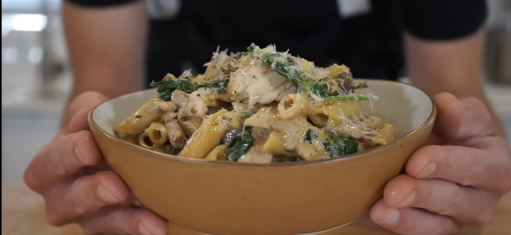

One Pot Pasta

Description:
Learn how to make this incredible one-pot creamy garlic chicken and mushroom pasta.
All of the ingredients are easily accessible making this recipe perfect for a quick meal and best of all you can save dishes by making it in one pot.
This creamy garlic mushroom pasta is easy to make, tastes delicious and you'll impress anyone you serve it to, even yourself. Please enjoy.
Ingredients:
Chicken (or veggie alternati):
- 750g (1.65lbs) - Boneless & Skinless Chicken thighs
- 1 tsp (2.5g) - Onion Powder
- 1 tsp (2.5g) - Garlic Powder
- ½ tsp (0.5g) - Dried Thyme
- ½ tsp (0.5g) - Dried Basil
- 1 Tbsp (20ml) - Olive Oil
Sauce and Pasta:
- 1 Tbsp (14g) - Unsalted Butter or Clarified Butter
- 1 - Brown (Yellow) Onion, Diced
- 5 - Garlic Cloves
- ¼ Cup (60ml) - White Wine (Substitute For Chicken Stock)
- 200g (7.05oz) - Swiss Brown Mushrooms, Thinly Sliced
- 1 Litre (4 Cups) - Chicken Stock
- 500ml (2 Cups) - Thickened Cream
- 350g (12.3oz) - Penne or Pasta of Choice
- 40g (1.4oz) - Parmesan Cheese, Freshly Grated
- 5g (0.2oz) - Flat Leaf Parsley, Roughly Chopped
- 120g (4.2oz) - Baby spinach, Washed
- Seasoning To Taste
Directions:
- Place the chicken thighs into a mixing bowl. Add in the onion powder, garlic powder, dried thyme, dried basil and ½ of the olive oil and salt and pepper to your preference. Mix to combine.
- Heat the remaining half of the olive oil in a large high rimmed pan over medium-high heat. Add in the seasoned chicken thighs and sear for 4 minutes on both sides. Remove and let rest for 8 minutes then slice into thin strips, and set aside.
- In the same pan, add the unsalted butter and allow it to melt. Add in the onion, saute for 3 minutes then add in the garlic and saute for 45 seconds, mixing regularly. Pour in the wine or stock and deglaze mixing regularly for 2 minutes.
- Add in the mushrooms and saute for 4 minutes or until golden. Add in the chicken stock, thickened cream and seasoning to taste, mix to combine and bring to a simmer.
- Add in the penne or pasta of choice, mix well and simmer for 12 minutes or until al dente, stirring occasionally.
- once al dente, add in the parmesan cheese and flat-leaf parsley and mix through until the cheese has melted. Add in the baby spinach and cook, stirring occasionally for 2 minutes or until wilted. Add the chicken and resting juice into the sauce, mix and heat for 1 minute. Remove from heat.
- Serve in bowls and garnish with extra virgin olive oil (EVOO) and cracked black pepper. Dig in.